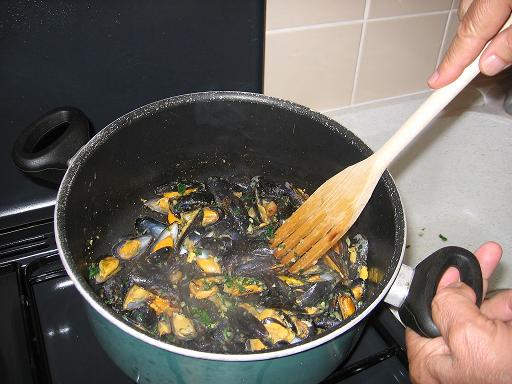

Recette n° 82 :
moules des Charentes comme chez Tante
Pierrette

Ingrédients
: (pour 4 personnes)
- 2 kg ou 2 litres de moules fraîches de bouchot
- 1 verre de vin blanc sec de cuisine
- 2 feuilles de laurier
- une branche de thym
- 4 biscottes ou l'équivalent en pain très sec
- 100 g de beurre
- 4 gousses d'ail
- 1 bouquet de persil
- sel et poivre selon goût
Préparation :
- hacher ail et persil, réserver
- écraser les biscottes, réserver
- nettoyer les moules, leur enlever leurs chevelure
- dans une casserole faire chauffer le vin blanc avec thym et laurier
- mettre les moules dans la casserole sur le feu et remuer
jusqu'à ce qu'elles s'ouvrent, ne pas insister trop
- filtrer les moules et retirer une valve par moule (celle à
laquelle la chair de la moule n'est pas fixée)
- mettre le beurre à fondre dans une poêle, sans qu'il ne
se colore
- mettre les moules dans la poêle et bien remuer pour qu'elles
s'imprègnent du beurre fondu
- jeter persillade et biscottes écrasées sur les moules
et remuer en continuant à chauffer jusqu'à ce que tout
soit absorbé par les moules
- saler et poivrer selon goût
- servir aussitôt
Observations :
1 - recette exécutée le 5 octobre 2006 pour Mamy
et moi.
2 - absolument excellent avec un muscadet sur lie.